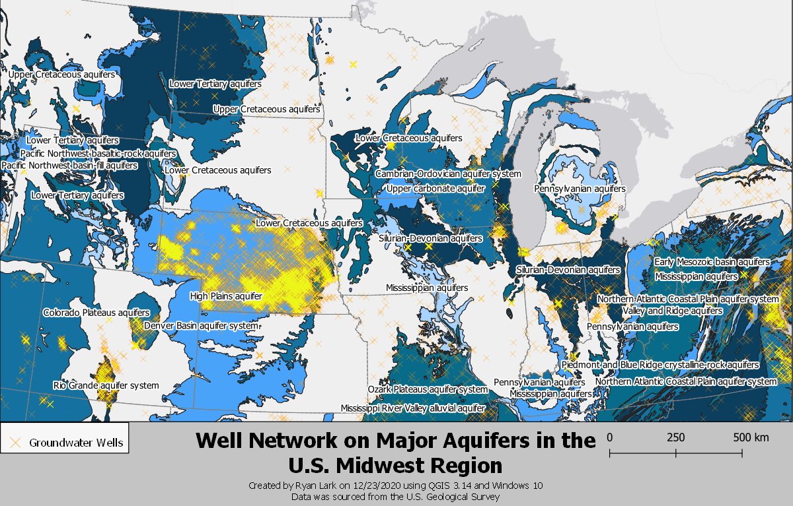

Groundwater Wells over Aquifers in the Midwest
Authored by: Ryan Lark
Groundwater usage is a highly contentious issue, particularly amongst those in the field of agriculture. While aquifers are technically considered a renewable resource, the overexploitation of its stores have led to their depletion over the years. Currently, the water pumped out of aquifers nationwide exceeds that of which is replenished, causing the aquifers to slowly shrink over time. Though they will replenish over time, those who rely upon its stores for a living, such as farmers, are under increasing pressure to find more conservative practices or alternative sources.


The High Plains Aquifer, also known as the Ogallala Aquifer, struggles with overexploitation in particular. Spanning across eight states to a total of 175,000 square miles, this aquifer has provided a steady source of fresh water to the heart of agriculture production in the United States for year. Recently, its stores have declined to a point where the wells on many farms in the Midwest have dried up completely, leaving those farmers unable to irrigate their crops. Fortunately, farmers have begun adopting more efficient irrigation methods to reduce their consumption in an effort to slow the aquifer's depletion.
Link to high resolution map
___________________________________
Coloration of each aquifer is used only to distinguish them from each other; no numerical value is symbolized. Only aquifers with area greater than 1 square decimal degree were deemed "major aquifers" and labeled on the map. Nonlabeled aquifers are still visualized. CRS used was EPSG: 102008.
- See my projects on GitHub